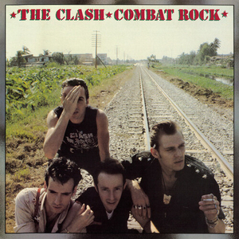

7 British Artists that prove Britain is not all bad
Skip to Oasis to prove you love britpop
The British raise the ire of many people, from sycophants on Twitter to mild mannered debate students at the University of Missouri. However, one area they do not suffer as much in is music. From classic rock to britpop to even ska, the British have it made when it comes to per capita great music, at least according to me. With that said, here are, in no particular order, 7 acts from Britain (that means England, Scotland, and Wales) that prove Britain is not all bad.
The Fratellis

Known for the stadium hit “Chelsea Dagger”, The Fratellis have a wealth of other hits, including “Henrietta”. Hailing from Glasgow, Scotland, the threesome consists of Jon Fratelli on lead vocals, Barry Fratelli on bass guitar, and Mince Fratelli on drums. Despite all having the same stage last name, the three are not related, instead using the last name Fratelli in inspiration to the Goonies.
Tears for Fears
Any list of british musicians that does not include Tears for Fears, is in my book not a list at all, as the English pop rock band formed by Roland Orzabel and Curt Smith are quintessential to the country’s music in the 80’s. Bursting onto the scene with the smash EP “The Hurting”, which featured beloved songs like “Pale Shelter” and “Mad World”, Tears for Fears is perhaps better known for 1984’s “Songs From The Big Chair”. Their first album to see worldwide success, “Shout” and “Everybody Wants to Rule the World” immediately became classics not just in Britain, but the entire anglosphere.
Madness

If somebody has never been introduced to Ska, then Madness is where they should begin. The track of there’s that everybody knows is “Our House”, which is commonly used in commercials and the like despite it’s anti-consumer meaning, but tracks such as “It Must Be Love”, “Night Boat to Cairo”, and “House of Fun” show how British culture can be exceptionally fun instead of dreary.
The Beatles

They're the Beatles
The Clash

Continuing on with the ska (put down your pitchforks), The Clash takes the ska influence of the past and brings in a bit of Punk styling to make some of the most essential punk songs for any fan, like “I Fought the Law”, “Rock the Casbah”, and of course “London Calling”.
Spice Girls

I’ll say nothing more than that the Spice Girls are the ultimate guilty pleasure.
Oasis
_Morning_Glory_album_cover.jpg)
This list is not ordered, but for my money Oasis is easily one of the best bands to come out of Britain. “Wonderwall” may be their only hit to get traction off the island, but “Champagne Supernova” and “Don’t Look Back in Anger” are both crowd friendly amazing songs that have stood the test of time.